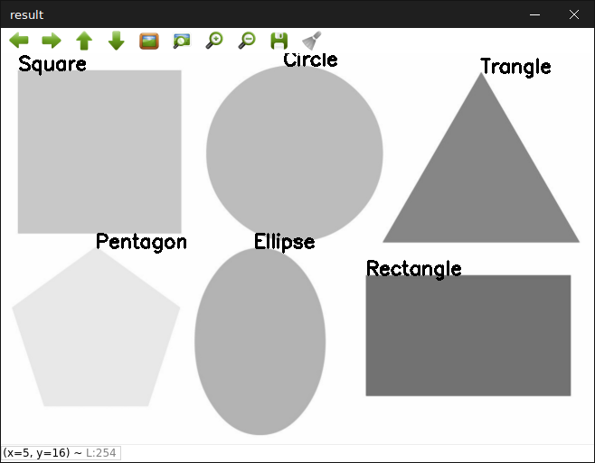

判断形状/approxPolyDP
见图，我们一眼就能分辨出所有的形状。但是计算机如何分辨这些是什么形状呢？思路
之前我们学了什么是轮廓，如何检测轮廓等。可能你会想直接轮廓检测出所有形状，然后按每个轮廓点的数量决定是什么形状。嗯，对了一半。那，另外一半呢？
放大来看，边角并不是想象中那么的尖锐，而是带齿形。这种情况轮廓检测在这个部分可能会检测到多个角而不是想象中的一个角。
所以函数approxPolyDP就能排上用场。(如果你有阅读之前的轮廓分析你就知道了什么是approxPolyDP)
示例
预处理/二进制
我们先读取图像，imread函数，我们能直接使用IMREAD_GRAYSCALE选项，这样就不用再cvtColor至灰度图(Grayscale)了。再使用阈值来获取二进制图像。#include <opencv2/opencv.hpp>
#include <vector>
using namespace cv;
using namespace std;
int main() {
Mat img;
img = imread("shapes.png", IMREAD_GRAYSCALE); // 读取灰度图
Mat thresh;
threshold(img, thresh, 240, 255, THRESH_BINARY_INV); // 阈值
...
我们使用THRESH_BINARY_INV模式，因为前几章提到，“需检测的物体是白色，背景是黑色”原则
轮廓检测
有了二进制图像，就可以轮廓检测了。我们使用CHAIN_APPROX_SIMPLE模式，因为我们只需要关键点罢了。...
vector<vector<Point> > contours;
vector<Vec4i> hierarchy;
findContours(thresh, contours, hierarchy, RETR_TREE, CHAIN_APPROX_SIMPLE);
...
我们把轮廓的全部点画出来：
...
Mat img_copy;
img.copyTo(img_copy);
for (int i=0; i<contours.size(); ++i) {
for (int j=0; j<contours[i].size(); ++j) {
circle(img_copy, contours[i][j], 2, Scalar(0), -1, LINE_AA);
}
}
imshow("contour points", img_copy);
...
判断形状
最后我们使用approxPolyDP估计形状。...
vector<Point> approx;
for (int i = 0; i < contours.size(); ++i) {
//近似轮廓，精度与轮廓周长成正比
double perimeter = arcLength(contours[i], true);
double epsilon = perimeter*0.01;
approxPolyDP(contours[i], approx, epsilon, true);
String shape_type;
RotatedRect rRect = minAreaRect(approx);
switch (approx.size()) {
case 3:
shape_type = "Trangle";
break;
case 4:
if (abs(rRect.size.width/rRect.size.height-1) < 0.1) {
shape_type = "Square";
} else {
shape_type = "Rectangle";
}
break;
case 5:
shape_type = "Pentagon";
break;
default:
RotatedRect rRect = minAreaRect(approx);
if (abs(rRect.size.width/rRect.size.height-1) < 0.1) {
shape_type = "Circle";
} else {
shape_type = "Ellipse";
}
}
putText(img, shape_type, contours[i][0], FONT_HERSHEY_SIMPLEX, 0.7, Scalar(0), 2);
}
imshow("result", img);
waitKey(0);
destroyAllWindows();
return 0;
}
最后我们的的程序能够分辨这些形状啦！
